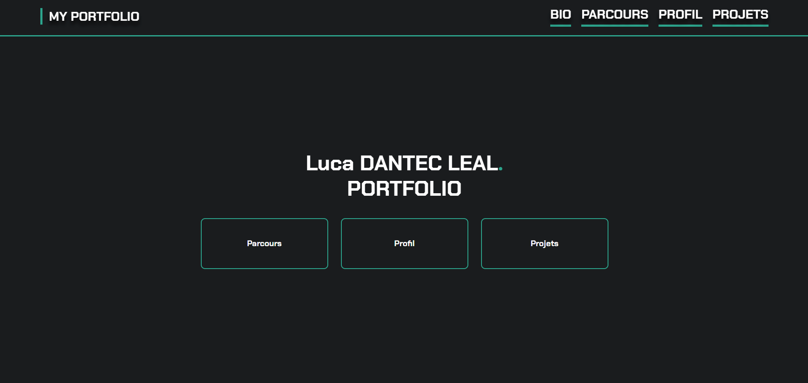
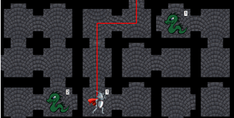
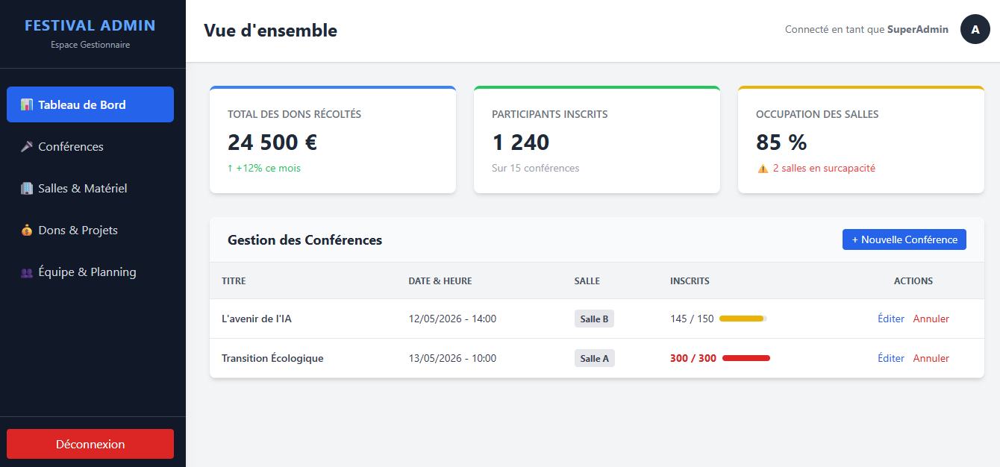

Site Portfolio
Création de mon propre site vitrine responsive pour présenter mes compétences et mon parcours étudiant.
HTML
CSS
Je m'appelle Luca Dantec Leal, étudiant en B.U.T. Informatique à Marne-la-Vallée. Depuis mon plus jeune âge, je suis fasciné par ce qui se passe derrière un écran.
Aujourd'hui âgé de 18 ans, je transforme cette curiosité d'enfance en véritable expertise technique.
Mon objectif est clair : me spécialiser dans le Développement Web.
Le développement web est pour moi le carrefour parfait entre la rigueur de la logique algorithmique et la créativité de l'expérience utilisateur.
Il me permet de construire des architectures techniques solides en arrière-plan, tout en concevant des interfaces visuelles fluides et intuitives.
C'est ce double défi, mêlant résolution de problèmes complexes et sensibilité esthétique, qui me passionne au quotidien.
Quand je ne suis pas en train de coder, vous me trouverez probablement sur un terrain de football ou en train de suivre un Grand Prix de Formule 1.
Ces passions m'ont appris deux choses essentielles que j'applique dans mon travail : l'importance de l'esprit d'équipe et la recherche constante de la performance.
Je suis actuellement à la recherche d'opportunités pour mettre mon énergie au service de projets web ambitieux.
Lycée Jeanne d'Albret à Saint-Germain-en-Laye. Découverte de l'informatique à travers la NSI. Premiers pas en Python et HTML.
Sciences et Technologies de l'Industrie et du Développement Durable. Mention Assez Bien. Confirmation de mon attrait pour la logique et le code.
IUT de Marne-la-Vallée. Formation intensive couvrant le développement logiciel, le web, les bases de données et la gestion de projet agile.

Création de mon propre site vitrine responsive pour présenter mes compétences et mon parcours étudiant.

Mini-jeu dans un donjon avec un aventurier et plusieurs éléments interactifs.

Site Web pour gérer les conférences et les dons. Avec une vue utilisateur et une vue administrateur.